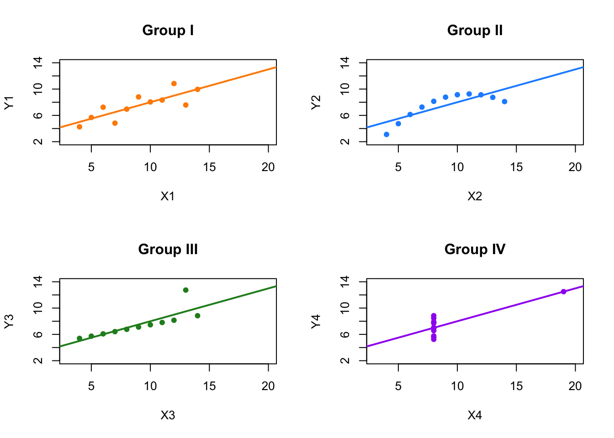
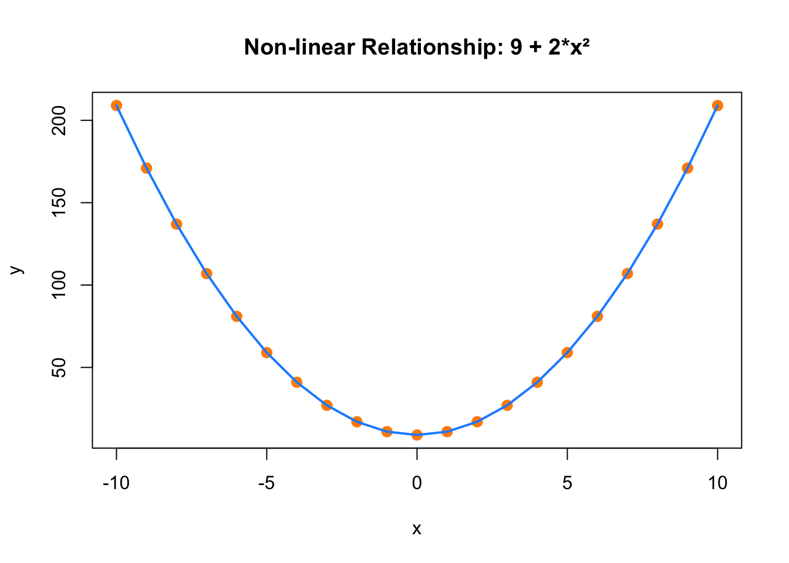

Chapter 2 From Data to Causality
Imagine a college student, Alex, who occasionally gets sick after meals but can’t figure out which food is causing it. Living in a time of growing awareness about food allergies, Alex is frustrated by recurring reactions and decides to investigate. To identify the cause of it, he starts logging everything he eats, noting down ingredients and tracking how he feels afterward—building a personal dataset.
Alex’s method mirrors the early steps of a typical quantitative research process: collecting data, utilizing descriptive statistics, visualizing the data, finding correlations, and ultimately using methods to determine the causation of the allergy. He creates a daily log of his meals and reaction levels, laying the groundwork for systematic analysis. As the records grow, he begins visualizing the data to spot patterns and make sense of his experiences.
To better understand the connections, Alex uses a few simple but powerful data visualization tools:
A Histogram of Reaction Intensity helps him see how often different severity levels occur. If most intense reactions (say, levels 8–10) cluster on garlic days, that’s a clear signal worth investigating.
A Bar Chart of Reactions by Food compares average reaction intensities across different ingredients like garlic, dairy, and wheat. If garlic stands out consistently, suspicion grows.
A Time Series Line Graph maps reaction levels over time, helping him spot clusters of bad days and check if they align with specific meals.
These visuals make potential correlations easier to spot. For instance, the histogram allows Alex to see if high reaction intensities—say, levels 8 to 10—occur frequently after consuming certain foods. The bar chart helps him compare average reaction intensities across ingredients, making it clear if garlic consistently stands out. The time series graph lets him observe patterns over time, showing peaks in reaction intensity on specific dates, which he can then match with what he ate that day. Recognizing patterns and correlations visually through these tools gives Alex a strong foundation to hypothesize about the cause of his reactions—enabling him to test specific foods in isolation or move toward more advanced methods of analysis.
Investigating Correlations:
Observing Correlations: To quantify his experiences, Alex began rating each reaction on a 1 to 10 scale, with 10 being the most severe. As his data accumulated over several weeks, a clear pattern emerged—every time he consumed garlic, his reaction intensity consistently ranged between 8 and 10. In contrast, foods like dairy or wheat occasionally triggered mild reactions (around 3 or 4), but without consistency. This distinction helped Alex narrow down the most likely trigger.
Potential Confounding Factors: One day, Alex felt unwell after a meal that didn’t include garlic but did include a milkshake. He began to wonder if dairy could be another potential allergen and started tracking dairy consumption more carefully. Over time, however, he noticed that several dairy-rich days passed without any symptoms, suggesting that the earlier incident might have been coincidental or influenced by another variable—highlighting how potential confounders can cloud interpretation.
Strength of Correlation: With more data, the link between garlic and his symptoms became increasingly pronounced. In nearly every instance where garlic was consumed, a strong reaction followed. Statistically, this would be described as a strong positive correlation—garlic consumption and high reaction intensity consistently moved together more than any other food in his records.
Spurious Correlations: At one point, Alex observed that his reactions often occurred on weekends. At first glance, this seemed unrelated to diet. However, after some reflection, he realized weekends were when he typically dined out—meals more likely to include garlic. This was a textbook example of a spurious correlation: weekends weren’t the cause, but they were associated with increased exposure to the actual culprit. Without careful consideration, such patterns can mislead conclusions.
Drawing Conclusions: Though correlation doesn’t prove causation, the persistent and strong association between garlic and adverse reactions led Alex to a well-supported hypothesis—he may be allergic to garlic. The Mystery of Mia’s Illness:
On certain weekends, Mia, Alex’s girlfriend, also began to feel unwell. As she traced back her symptoms, she noticed a troubling pattern—her discomfort often coincided with the days she spent time at Alex’s place. This raised concerns: was she developing a food allergy too? Had she unknowingly consumed garlic during shared meals?
Curious and cautious, Mia decided to track her symptoms alongside Alex’s garlic consumption log. To her surprise, she discovered that she sometimes felt sick on days Alex ate garlic—even when she hadn’t eaten any herself.
Spurious Correlation Revealed: Further investigation uncovered a crucial detail. Whenever Alex cooked with garlic at home, he would light a specific brand of aromatic candle to mask the lingering smell. It turned out Mia wasn’t reacting to garlic at all, but to the fragrance of the candle. The apparent connection between her symptoms and Alex’s garlic intake was a spurious correlation—the real trigger was environmental, not dietary.
This example highlights how easy it is to misattribute effects when variables move together by coincidence or through indirect associations. It underscores the importance of ruling out alternative explanations before concluding causation.
Alex’s Exploration of the Effect of His Garlic Consumption on His Allergy Severity:
After discovering a strong correlation between garlic consumption and allergic reactions, Alex decided to go further. While the link was clear, he wanted to quantify how garlic affected his symptoms and whether other factors played a role. Was the reaction intensity influenced not just by garlic, but also by variables like his weight, the weather, or whether he ate indoors or outside?
Gathering Data: Over several weeks, Alex carefully recorded new variables alongside his usual food and reaction logs: the quantity of garlic in each meal, his daily weight, peak temperature of the day,and whether he dined indoors or outdoors.
To better understand the relationships, he applied an Ordinary Least Squares (OLS) regression, allowing him to estimate how each factor contributed to reaction severity while holding others constant. The results were revealing. The coefficient on garlic quantity was positive, confirming that more garlic led to stronger allergic responses. Interestingly, on days when his weight was slightly higher, the reactions were milder—suggesting his body might have had more capacity to buffer allergens. Higher temperatures were also linked to lower reaction intensity. Dining outside, however, was associated with more severe reactions. This initially seemed odd until Alex realized that eating outside often meant restaurants, where he had less control over ingredients and was more likely to encounter hidden garlic.
He recalled Mia once commenting that his reactions seemed worse on weekends. Reflecting on this, Alex saw the pattern: weekends were when he most often dined out, increasing his garlic exposure. The weekend itself wasn’t the cause—just another case of spurious correlation, with garlic quietly driving the outcome behind the scenes.
Investigating Causation:
Having found strong correlations and accounted for confounding variables through OLS regression, Alex understood that correlation alone couldn’t prove causation. While his descriptive analyses and OLS regression had helped isolate the effect of garlic alongside other variables—like his weight, temperature, and whether he ate indoors or out—it still couldn’t fully rule out all alternative explanations. To confirm whether garlic truly triggered his allergic reactions, he needed more rigorous evidence—beyond what statistical controls could offer.
Then he remembered a news article he’d recently read. It mentioned certain foods that were structurally and chemically similar to garlic, which could also provoke allergic responses in sensitive individuals. This introduced a new layer of complexity: perhaps garlic wasn’t the sole offender. Maybe related foods were amplifying his symptoms, or worse, confusing the picture entirely.
Determined to get a definitive answer, Alex turned to a more rigorous method—the experimental approach. As the gold standard for establishing causality, experimentation would allow him to control conditions and observe effects in a structured way. He planned to systematically introduce and remove garlic and garlic-like foods from his diet while keeping other factors constant.
To strengthen the reliability of the experiment, Alex asked three friends, who had no known food allergies, to participate as a control subject. By comparing their reactions under identical conditions, he could better isolate the specific effect of garlic.
For a week, they ate standardized meals, differing only in the inclusion of garlic and similar foods. All of his friends consistently showed no symptoms, even after consuming garlic. Meanwhile, Alex continued to experience reactions—especially on the days garlic was part of his meal. The contrast was clear and consistent.
His friends’ reaction-free experience, even when eating foods chemically similar to garlic, helped Alex rule out those other candidates. It became evident that garlic alone was responsible for his symptoms. Including a control like three similar people not only confirmed the role of garlic but also helped eliminate the possibility that other related foods or environmental triggers were to blame.
Causation Established:
With repeated, consistent results and other potential causes ruled out, Alex concluded with confidence that garlic was not just associated with his allergic reactions—it was the cause. In scientific terms, he had successfully moved from correlation to causation.
This journey mirrors the broader scientific process: careful observation, systematic data collection, identification of confounding variables, regression analysis, and finally, controlled experimentation to isolate causal effects. It’s a model that reflects how researchers in fields like statistics and machine learning work to move beyond pattern recognition toward valid inference.
2.1 Qualitative and Quantitative Research Methods
In research, two primary methodologies are widely used: qualitative and quantitative. Qualitative research involves collecting non-numerical data through tools like focus groups, unstructured or in-depth interviews, and document analysis to identify specific patterns or themes. In social sciences, a qualitative study might explore how individuals perceive the returns to education or the barriers women face in accessing formal employment, drawing on in-depth interviews to understand lived experiences. Another example could be interviewing households in low-income communities to understand decision-making around child labor and schooling.
Quantitative research, in contrast, emphasizes measurable, numerical data and the use of structured tools such as surveys, structured interviews, and administrative records. It often relies on statistical, mathematical, or computational analysis. For example, an economist might estimate the causal effect of education on income using national survey data or evaluate how changes in minimum wage laws affect employment rates across different demographic groups. These studies frequently involve large datasets and use statistical techniques to establish correlations or causal effects.
Quantitative research can also use existing datasets in combination with computational methods to make predictions or simulate policy impacts. For instance, researchers might use household survey data to forecast future income distributions under alternative tax policies. In the health field, a quantitative study might assess the effect of a new health insurance program on access to care by comparing health outcomes across treated and untreated groups. Such studies rely on structured observations or measurements to analyze questions about a specific sample population, using approaches such as descriptive, quasi-experimental, or experimental designs.
While both approaches contribute to knowledge, their underlying processes differ. Qualitative research typically follows an inductive logic, aiming to build theories or generate hypotheses based on patterns observed in the data. Quantitative research, on the other hand, uses a deductive approach, testing existing hypotheses or theoretical models using empirical data.
The nature of data in these two approaches also diverges. Qualitative research is inherently subjective and seeks to understand conditions from the perspective of participants. For example, a sociologist might use interviews to investigate how small business owners in rural areas interpret new financial regulations. Quantitative research is more objective, often aiming to measure the impact of specific interventions—such as estimating how a cash transfer program affects household spending—based on observable, quantifiable outcomes.
Qualitative data is text-based and offers rich, in-depth insight from a limited number of cases, while quantitative data is number-based, often covering broader populations but with less depth per case. Analysis in qualitative research is typically interpretive, using techniques like coding and thematic analysis. Quantitative research, by contrast, applies statistical tests to assess significance, effect sizes, or predictive power, allowing for more standardized conclusions.
In terms of data collection, qualitative research tends to use unstructured or semi-structured formats, enabling open-ended responses. Quantitative studies use fixed-response formats with predefined scales or categories. While qualitative findings are often less generalizable due to their case-specific depth, quantitative results are typically more generalizable due to their broader coverage.
Though this discussion focuses on qualitative and quantitative methods as distinct approaches, many researchers employ mixed methods—combining both to enrich analysis. For instance, a researcher may use qualitative interviews to design a survey instrument and then conduct a quantitative evaluation of an impact of the program.
In summary, while qualitative and quantitative research serve different purposes, both offer valuable tools for understanding economic and social phenomena. They differ in their methods, processes, data types, and scope of generalizability, each with unique strengths depending on the research question. In this book, we focus on quantitative methods.
2.2 Quantitative Research Methods
This section provides a general perspective on research methods commonly used in health, economics, and the social sciences. Research begins with a clear, answerable question. While we may not always find definitive answers with the data and tools available, we can often generate insights that improve our understanding of how the world works. A good research question is usually connected to a hypothesis—something we observe in the world or expect based on theory. If a theory predicts how something operates, we should, in principle, be able to test it using data.
To do this, researchers collect or access data, explore patterns, make assumptions, and analyze the data accordingly. The conclusions may reflect associations, correlations, or causal relationships, and the goal is often to explain observed phenomena, make predictions, or support decision-making. These core ideas were introduced at the beginning of the book.
Each field tends to rely on different methodological traditions. In health research, a major emphasis is placed on evidence-based methods. In Patient Care under Uncertainty, Charles Manski explains that whether studying treatment response or personalized risk, the objective is similar: probabilistic prediction of patient outcomes given patient attributes. Econometricians refer to this as regression analysis; psychologists may call it statistical or actuarial prediction; computer scientists describe it as machine learning or AI; business researchers often use the term predictive analytics.
Health researchers typically begin with descriptive analysis to identify associations. When the goal is to estimate causal effects—such as whether treatment X causes outcome Y—they rely heavily on randomized controlled trials (RCTs), often referred to as the “gold standard.” These methods also support prescriptive decisions, such as choosing between surveillance and aggressive treatment, and draw on both clinical judgment and empirical evidence.
RCTs are widely valued for their internal validity—that is, the credibility of findings for the sample studied. Yet, evidence-based research faces important limitations. Stronger identifying assumptions may allow more decisive conclusions but can reduce credibility. This trade-off has led to a preference for methods with fewer and more transparent assumptions—especially randomized experiments. The idea is that when treatment is randomly assigned, comparisons between treated and control groups are more likely to reflect true causal effects. Variants of this approach appear in other fields under different names: A/B testing in machine learning and randomized field experiments in economics.
Still, randomized trials have their own challenges. Trial samples may differ from the broader population, estimates are often statistically imprecise due to small sample sizes, and volunteer-based participation may not reflect how real-world patients respond. As a result, predictions based on trial data may be fragile, especially when uncertainty is not properly addressed. These concerns have prompted criticism, including from Deaton and Cartwright (2018), who argue that RCTs are sometimes misunderstood or overused, and that the quality of causal evidence depends as much on thoughtful design and interpretation as on randomization itself.
Despite these issues, researchers in health fields often give more weight to an RCT with 200 participants than an observational study with 200,000. This preference is often justified using Donald Campbell’s framework of internal and external validity (Campbell and Stanley, 1963). Internal validity refers to the credibility of findings within the sample studied—similar to in-sample analysis in machine learning. External validity is about whether those findings generalize to other populations—akin to out-of-sample prediction. Since the 1960s, Campbell’s argument that internal validity should take precedence has supported the primacy of experimental methods over observational ones, regardless of sample size.
Yet, credible inferences still require that the sample be representative of the target population. Without representativeness, even well-identified estimates may be biased or misleading. This issue is especially salient in observational studies, where selection into treatment or sampling is often non-random. We will return to this point when discussing sampling and population inference—key challenges in all empirical research.
Economics, in contrast to health research, places greater value on observational studies, especially those using large, representative datasets. Here too, Campbell’s framework applies. The best observational studies are often those that most closely approximate randomized experiments while leveraging the broader generalizability that comes with representative data. As Banerjee and Duflo (2009) emphasize, high-quality observational and quasi-experimental studies—particularly when embedded in real-world settings—can yield policy-relevant insights even without full randomization.
These methodological tensions also reflect differences in research goals. Shmueli (2010) distinguishes between explanatory modeling, which aims to understand causality, and predictive modeling, which seeks to forecast future outcomes. Both goals are central to research across disciplines, but each places different demands on data, assumptions, and evaluation criteria. For instance, a model with high predictive power may offer little insight into causal mechanisms, and vice versa.
Finally, economics and statistics often adopt a pragmatic mindset toward modeling. As Box (1976) famously said, “All models are wrong, but some are useful.” Milton Friedman (1953) made a similar point, arguing that unrealistic assumptions are not necessarily problematic—what matters is whether the resulting conclusions approximate reality. Cartwright (2007) builds on this perspective, arguing that the usefulness of a model lies not just in its formal properties but in how well it aligns with real-world structures. This philosophical view continues to shape how researchers evaluate the trade-offs between internal validity, external validity, and model realism.
2.3 Data and Visualization
Researchers in fields such as health, economics, business, and the social sciences rely heavily on data to understand both dynamic (time-varying) and static (time-invariant) phenomena. The primary forms of data used in empirical research are cross-sectional, time series, and panel (or longitudinal) data.
Cross-sectional data captures observations from multiple subjects—such as individuals, households, firms, or countries—at a single point in time or over a short period. It offers a snapshot of various attributes, allowing researchers to examine variation across units but not over time. Time series data, in contrast, consists of repeated observations on a single unit or aggregate at regular intervals. This structure is particularly useful for identifying temporal patterns and forecasting outcomes. Panel data combines features of both: it tracks the same units over multiple time periods, enabling researchers to examine both within-unit changes and between-unit differences, while controlling for unobserved heterogeneity through techniques like fixed effects.
Researchers use a variety of data sources to assemble these datasets. These include survey data (e.g., household or labor force surveys), administrative records (e.g., health care billing data, school enrollment), experimental data (e.g., field trials), and increasingly, digital sources such as web-scraped data, sensor-generated data, or mobile app records.
Once data is obtained, the research process follows a structured workflow. The first step is to explore the raw data to understand its structure and content. Next comes data cleaning, which includes identifying and correcting errors, handling missing values through deletion or imputation, and removing or adjusting outliers. Researchers must also consider ethical and legal responsibilities when working with sensitive data—such as protecting privacy, ensuring informed consent, and complying with data protection regulations. Clean data is then ready for analysis and visualization, which help uncover structure, identify patterns, and support interpretation.
Visualization is a foundational tool in this process. It facilitates both exploratory analysis and clear communication of results. Effective visualizations can reveal trends, anomalies, clusters, or relationships that may not be obvious in raw numbers. Common static techniques include histograms, barplots, boxplots, scatterplots, and heatmaps:
Histograms display the frequency distribution of continuous or discrete variables. Each bar represents a range of values (a bin), and the height shows the count within that range—for example, the number of people whose income falls within $10,000 intervals.
Barplots are typically used with categorical variables to compare means or medians across groups—such as average test scores by classroom or median house prices by city.
Boxplots visualize the spread and skewness of a variable and highlight potential outliers. They show the interquartile range (middle 50%), the median, and the extremes of the data. These are especially helpful for comparing distributions across multiple categories.
Scatterplots are useful when plotting two continuous variables, with each point representing a single observation. These plots help identify correlations or nonlinear relationships—for instance, between education level and wages.
Heatmaps represent the intensity or magnitude of values using color gradients in a matrix layout. They are particularly effective for visualizing correlation matrices or geospatial distributions, such as temperature or crime intensity.
More advanced visualizations expand analytical possibilities. Line graphs are ideal for time series data to track changes over time. Area charts show how different components contribute to a total across periods. Network diagrams are used to represent relationships between entities, such as in social network analysis or biological systems.
Interactive visualizations have become increasingly popular, especially in web-based reporting. Tools like dashboards, interactive maps, and sliders allow users to manipulate parameters and observe how patterns or results change in real time. These approaches are particularly effective in exploratory work, dashboards for policymakers, and educational tools.
Combining static and interactive visualizations deepens researchers’ understanding of their data and strengthens communication of results. Together, these tools support better diagnostics, model development, and data-driven decisions.
Building on this foundation, the next section will introduce the concept of correlation, which quantifies the strength and direction of relationships between variables—a key step in both exploratory analysis and model building.
Throughout this book, we demonstrate how to implement prediction and causal models using cross-sectional data first, followed by panel data, and then time series data. Each type will be matched with appropriate methods and practical examples in R.
R offers a powerful and flexible environment for data analysis and visualization. Using base R and packages from the tidyverse—such as readr, readxl, dplyr, and ggplot2—you can access, clean, and summarize data efficiently. Tidy data principles are central to these tools. For visualization, ggplot2 enables the creation of histograms, barplots, boxplots, scatterplots, and more, with extensive layering and customization. For time series and panel data, packages like tsibble, zoo, and plm offer functions for reshaping, modeling, and visualizing data over time. For interactive visuals, plotly, leaflet, and shiny allow users to build dynamic, web-based visual tools. These packages together make R a reproducible, extensible, and transparent platform for applied research.
2.4 Correlation
As we build from data visualization into analytical methods, a natural next step is understanding how variables are related. This brings us to one of the most widely used concepts in data analysis: correlation.
The phrase “correlation does not imply causation” is often cited in discussions of statistical relationships to emphasize an important caution in data interpretation. To fully appreciate what this means, we must first understand the concept of correlation and its role in evaluating connections between two variables.
Correlation is a statistical measure that quantifies the degree of association between two variables, typically describing how closely they follow a linear relationship. The term association is broader than correlation, as it encompasses any kind of relationship between variables—linear or nonlinear. In practice, correlation plays a key role in many fields, including finance, healthcare, and marketing, where understanding relationships between variables guides decisions and strategies. Interestingly, the word correlation combines “co-” (meaning together) and “relation,” reflecting its function in identifying how quantities move in connection with one another.
There are three types of correlation: positive, negative, and zero. A positive correlation indicates that both variables move in the same direction. For example, as advertising expenditure increases, sales revenue may also rise—suggesting a positive correlation. A negative correlation means the variables move in opposite directions, such as when increased hours of television watching are associated with lower academic performance. Zero correlation implies no discernible relationship—changes in one variable are not systematically associated with changes in the other.
Correlation analysis is the statistical method used to examine whether and how strongly pairs of variables are related. It helps researchers quantify how two variables move together or apart, and whether that movement is consistent enough to be considered meaningful. By measuring the strength and nature of associations, correlation analysis can guide further exploration or prediction, though it must be interpreted carefully to avoid incorrect conclusions about causality.
One of the most common tools in correlation analysis is the Pearson correlation coefficient. This coefficient quantifies the strength and direction of a linear relationship between two numerical variables. It ranges from -1 to 1: values close to -1 indicate a strong negative linear relationship, values near 1 suggest a strong positive relationship, and values near 0 imply little to no linear association. For example, a Pearson correlation of 0.8 between study hours and test scores suggests that, in general, more study time is associated with higher scores.
The Pearson correlation coefficient, usually denoted as \(r\), can be calculated using two equivalent approaches. The first is:
\[\begin{equation} r = \frac{\sum (x_i - \overline{x})(y_i - \overline{y})}{\sqrt{\sum (x_i - \overline{x})^2 \sum (y_i - \overline{y})^2}} \end{equation}\]
This formula computes \(r\) as the ratio of the sum of the product of deviations from the mean for both variables to the geometric mean of the sums of squared deviations.
The second approach uses the covariance and standard deviations of \(x\) and \(y\):
\[\begin{equation} r = \frac{\text{cov}(x, y)}{s_x s_y} \end{equation}\] where \(\text{cov}(x, y)\) is the covariance between \(x\) and \(y\), and \(s_x\) and \(s_y\) are the standard deviations of \(x\) and \(y\), respectively. This formula emphasizes that correlation is a standardized measure of covariance, allowing for comparisons across different datasets or variables. Here, the covariance between \(x\) and \(y\) is defined as:
\[\begin{equation} \text{cov}(x, y) = \frac{1}{n-1} \sum (x_i - \overline{x})(y_i - \overline{y}) \end{equation}\]
The standard deviations of \(x\) and \(y\) are:
\[\begin{equation} s_x = \sqrt{\frac{1}{n-1} \sum (x_i - \overline{x})^2} \quad \text{and} \quad s_y = \sqrt{\frac{1}{n-1} \sum (y_i - \overline{y})^2} \end{equation}\]
In these formulas, \(x_i\) and \(y_i\) represent individual values of the two variables, \(\overline{x}\) and \(\overline{y}\) are their means, and the summations run over all \(n\) observations. These expressions show that \(r\) normalizes the covariance by dividing it by the product of the standard deviations, thereby measuring how much the two variables co-vary in proportion to their individual variability.
Covariance itself tells us the direction of a linear relationship between two variables, such as whether they increase together or one increases while the other decreases. However, covariance does not indicate the strength of that relationship because its magnitude depends on the units and scale of the variables. To overcome this limitation, we use the correlation coefficient, which standardizes covariance.
Correlation is essentially the covariance between two variables divided by the product of their standard deviations. This standardization results in a dimensionless number that always falls between -1 and 1, allowing meaningful comparisons across datasets regardless of the original scale of the variables. This makes correlation a powerful and versatile tool for exploring relationships in data.
In the following simulation, we demonstrate how scaling affects covariance but not correlation, illustrating an important distinction between these two concepts. We begin by generating two numerical variables, each with 20 observations, and then scale them by multiplying each by 1,000. This operation significantly changes the magnitude of the covariance, showing that covariance is sensitive to the scale of the variables. However, when we calculate the correlation coefficients—using both definitions described earlier—we find that the values remain unchanged. This example highlights the robustness of correlation as a standardized, unit-free measure of association.
# Set seed for reproducibility
set.seed(0)
# Generate two variables each with 20 observations, all less than 10
x <- runif(20, min = 0, max = 10)
y <- runif(20, min = 0, max = 10)
# Scaling the data by multiplying each element by 1000
x_scaled <- x * 1000
y_scaled <- y * 1000
# Print the original and scaled variables
#print(x)
#print(y)
#print(x_scaled)
#print(y_scaled)
# Calculate the covariance between x and y
covariance_original <- cov(x, y)
print(paste("Original covariance:", covariance_original))## [1] "Original covariance: -1.26490786248817"# Calculate the covariance between x_scaled and y_scaled
covariance_scaled <- cov(x_scaled, y_scaled)
print(paste("Covariance after scaling:", covariance_scaled))## [1] "Covariance after scaling: -1264907.86248817"# Compute standard deviations for both datasets
sd_x <- sd(x)
sd_y <- sd(y)
#print(paste("Standard deviation of x:", sd_x))
#print(paste("Standard deviation of y:", sd_y))
# Standardize the variables
x_standardized <- (x - mean(x)) / sd_x
y_standardized <- (y - mean(y)) / sd_y
#print(paste("Standardized variable x:", x_standardized))
#print(paste("Standardized variable y:", y_standardized))
# Calculate the covariance between the standardized x and y
#which give us the correlation coefficient:
correlation_original <- cov(x_standardized, y_standardized)
print(paste("Correlation after standardizing:", correlation_original))## [1] "Correlation after standardizing: -0.152795399233766"# Equivalent formula to calculate the correlation between the original x and y
correlation_original2 <- cov(x, y) / (sd_x * sd_y)
print(paste("Correlation after standardizing2:", correlation_original2))## [1] "Correlation after standardizing2: -0.152795399233766"# Compute standard deviations for both scaled datasets
sd_x_scaled <- sd(x_scaled)
sd_y_scaled <- sd(y_scaled)
# Standardize the variables
x_scaled_standardized <- (x_scaled - mean(x_scaled)) / sd_x_scaled
y_scaled_standardized <- (y_scaled - mean(y_scaled)) / sd_y_scaled
# Calculate the correlation between the scaled x and y
correlation_scaled <- cov(x_scaled, y_scaled)/(sd_x_scaled * sd_y_scaled)
print(paste("Correlation after scaling:", correlation_scaled))## [1] "Correlation after scaling: -0.152795399233766"# Equivalent formula to calculate the correlation between the scaled x and y
correlation_scaled2 <- cov(x_scaled_standardized, y_scaled_standardized)
print(paste("Correlation after scaling:", correlation_scaled2))## [1] "Correlation after scaling: -0.152795399233766"Having seen how correlation remains consistent regardless of scale, it’s worth revisiting the importance of data visualization, as emphasized in the previous subsection. A compelling illustration of why visual analysis is essential is provided by the Anscombe Quartet, a well-known example that underscores the limitations of relying solely on numerical summaries.
The Anscombe Quartet (1973) consists of four datasets with nearly identical statistical properties: they share the same means, variances, correlation coefficients, and linear regression lines.
| Statistics | Group I | Group II | Group III | Group IV |
|---|---|---|---|---|
| Mean X | 9.000 | 9.000 | 9.000 | 9.000 |
| Mean Y | 7.501 | 7.501 | 7.500 | 7.501 |
| Variance X | 11.000 | 11.000 | 11.000 | 11.000 |
| Variance Y | 4.127 | 4.128 | 4.123 | 4.123 |
| Covariance | 5.501 | 5.500 | 5.497 | 5.499 |
| Correlation | 0.816 | 0.816 | 0.816 | 0.817 |
| Intercept | 3.000 | 3.001 | 3.002 | 3.002 |
| Slope | 0.500 | 0.500 | 0.500 | 0.500 |
Yet when plotted, the datasets reveal dramatically different patterns. This example powerfully demonstrates that statistical summaries can be misleading unless paired with visual inspection.
For instance, Group I in the Anscombe dataset displays a typical linear relationship, where a straight-line model is appropriate. Group II, despite having the same regression line, shows a curved, nonlinear pattern, making a linear model unsuitable. Group III includes an outlier that heavily influences the regression, masking the real structure of the data. Group IV features most data points clustered at the same x-value, with a single influential point dictating the entire regression line. These differences become clear only through visualization and cannot be detected from summary statistics alone.

FIGURE 2.1: Anscombe’s Quartet: Four Datasets with Identical Statistics
This example reinforces a key message: visualizing data is essential before interpreting statistical metrics such as correlation or regression outputs. It also prepares us to address another common misconception—namely, that a correlation coefficient of zero implies independence between variables.
A correlation of zero simply means that there is no linear relationship between the variables. It does not rule out the presence of a nonlinear association. To illustrate this, we can construct a simple nonlinear relationship, such as defining one variable as a quadratic function of another. Even though the two variables are clearly related, the correlation coefficient may be close to zero, misleadingly suggesting no relationship at all.
set.seed(42) # Set seed for reproducibility
x <- -10:10 # Generate x as a sequence of values
y <- 9 + 2 * x^2 # Define y as a non-linear function of x
# Plot x vs y to visualize the non-linear relationship
plot(
x, y,
main = "Non-linear Relationship: 9 + 2*x²",
xlab = "x", ylab = "y",
pch = 19, col = "darkorange", cex = 1.2
)
# Add a smooth curve
lines(x, y, col = "dodgerblue", lwd = 2)
FIGURE 2.2: Non-linear Relationship Between x and y
# Calculate and print the correlation between x and y
correlation <- cor(x, y)
print(paste(
"Correlation between x and y:",
formatC(correlation, format = "f", digits = 3)
))## [1] "Correlation between x and y: -0.000"This limitation highlights the need for alternative correlation measures when relationships are nonlinear or more complex. Beyond the Pearson correlation, several other methods exist that can better capture these associations.
Partial correlation is one such method. It measures the relationship between two variables while holding one or more additional variables constant. This helps isolate the direct connection between two variables, free from confounding influences. For example, when examining the relationship between education and income, controlling for age and work experience through partial correlation provides a more accurate picture of the direct effect of education.
Conditional correlation is similar but often involves conditioning on categorical variables. It allows researchers to explore how the relationship between two continuous variables might change across different groups or segments. This method is especially helpful when relationships differ across subpopulations—for instance, analyzing how the correlation between exercise and blood pressure may vary by gender or age group.
Spatial correlation is relevant when the data include geographic or locational information. It assesses how values measured in nearby locations relate to each other. For example, pollution levels in one region may correlate with those in adjacent areas. Spatial correlation helps identify clustering effects or diffusion patterns, commonly used in environmental studies and urban planning.
Dynamic correlation focuses on how the relationship between variables evolves over time. In time series or panel data contexts, it captures whether variables move together consistently or if their relationship shifts. This is particularly important in economics and finance, where variables like interest rates and inflation may be more closely related in some periods than others. Dynamic correlation offers insights into these temporal changes.
Each of these correlation techniques provides unique insights, tailored to different types of data structures and research objectives. By choosing the appropriate correlation method, researchers can better understand the underlying connections and avoid misleading interpretations.
In summary, correlation analysis is a powerful and flexible tool for exploring the relationships between variables. Pearson correlation is widely used for measuring linear associations, but when data relationships are influenced by other variables, change over time, or are shaped by geography or nonlinearity, other methods such as partial, conditional, spatial, and dynamic correlation are more appropriate. Understanding and applying these tools enables researchers to gain deeper insights into complex patterns of association.
Importantly, while correlation can help describe how variables move together, it does not explain why. A strong correlation between two variables does not imply that one causes the other. Confounding variables, reverse causality, or coincidence may all be responsible. This is why the phrase “correlation does not imply causation” remains so central in empirical research. Drawing conclusions about causal effects requires additional tools and careful design. The next sections will explore the principles, strategies, and statistical methods for establishing causal relationships in data.
2.4.1 Correlation and Regression
Having explored how correlation helps us understand the strength and direction of relationships between variables, we now turn to a related but distinct concept: regression. While both correlation and regression examine relationships, they differ in purpose, interpretation, and application.
Correlation and regression are two foundational statistical methods used to analyze how variables relate to one another. They share similarities: both often assume a linear relationship between variables and involve coefficients that quantify these associations. These methods help illustrate how changes in one variable may relate to changes in another.
However, it is important to recognize their key differences. Correlation is primarily a descriptive technique. It measures the strength and direction of an association between two variables without attempting to model or predict outcomes. The correlation coefficient, which ranges from -1 to 1, summarizes how tightly two variables move together. A coefficient of 1 indicates a perfect positive relationship, -1 a perfect negative relationship, and 0 indicates no linear association. Correlation is especially useful when we want to summarize associations—such as between smoking and lung cancer—without making assumptions about causality or directionality.
In contrast, regression is a method used to explain and quantify the impact of one or more variables on another. It not only assesses the relationship between variables but also builds a model that estimates how changes in one variable influence another. This makes regression especially useful for forecasting and for evaluating the effect of an explanatory variable on an outcome. In econometrics, the term often refers to models that aim to estimate causal or structural relationships, under specific assumptions about the data-generating process.
Regression can accommodate both continuous and categorical variables. For instance, one might predict a student’s GPA using hours of study (a continuous variable) and major (a categorical variable). The analysis produces coefficients that indicate the direction and magnitude of the effects, alongside measures like standard errors and p-values that help assess precision and statistical significance.
In summary, while both correlation and regression examine relationships, they serve distinct purposes. Correlation describes the strength and direction of an association but does not imply causality or predict outcomes. Regression goes further by modeling that relationship and allowing us to make predictions or infer potential effects. Understanding when and how to use each method is essential for aligning statistical tools with research objectives. The next section presents a slightly more technical discussion of regression, focusing on how we interpret coefficients, evaluate model fit, and think carefully about what it means to estimate the “effect” of \(X\) on \(Y\).
2.5 Effect of \(X\) on \(Y\) / Regression
Economists and social scientists typically work with observational data drawn from representative samples. Their primary goal is not prediction but understanding how changes in one variable, \(x\), are associated with changes in another, \(y\), on average. When they estimate a regression model, they aim to uncover a systematic relationship between these variables—specifically, how the average value of \(y\) changes with \(x\), holding other factors constant. This relationship is captured by the Conditional Expectation Function (CEF), denoted \(E(y \mid x)\)4, which summarizes how \(y\) behaves in expectation across values of \(x\).
Ordinary Least Squares (OLS) regression does not recover the full distribution of outcomes or individual-level variation; instead, it approximates the CEF linearly. That is, it finds the line that best summarizes how average \(y\) varies with \(x\)5. The simple linear regression model is:
\[\begin{equation} y_i = \beta_0 + \beta_1 x_i + u_i \end{equation}\]
Here, \(\beta_1\) represents the change in the mean of \(y\) associated with a one-unit change in \(x\), assuming the error term \(u_i\) is not systematically related to \(x_i\)6.
For example, if \(x\) is years of education and \(y\) is income, the slope \(\beta_1\) tells us how average income changes with an additional year of education—not how income changes for any specific individual. The key point is that regression is about relationships between means, not precise individual-level predictions. The variation of actual observations around the regression line—due to unmeasured or idiosyncratic factors—is captured by the error term \(u_i\), but the model focuses on summarizing how \(E(y \mid x)\) behaves.
This emphasis stands in contrast to machine learning (ML), which is primarily focused on prediction. ML algorithms aim to minimize individual-level prediction error and typically do not assume any specific functional form. Instead, they search for flexible patterns in the data that yield the most accurate predictions for \(y\), given the input features \(x\). Methods like Lasso or random forests often outperform OLS in predictive accuracy but do not yield easily interpretable summaries like regression coefficients. As Victor Chernozhukov noted in a 2013 NBER presentation, Lasso can approximate the CEF better than OLS for certain data sets, in terms of predictive fit—but its goal is predictive accuracy, not interpretability.
Bruce Hansen, in his wonderful 2022 book Econometrics, emphasizes that even when the true relationship between \(x\) and \(y\) is nonlinear, OLS still gives the best linear approximation to the CEF7. This is particularly important in economics and social sciences, where researchers seek to explain average effects and mechanisms rather than to maximize predictive performance.
Regression is a foundational topic in any introductory econometrics course. The goal here is not to reteach the mechanics, but to clarify the intuitive difference between estimating effects using regression—based on how average outcomes vary with inputs—and predicting outcomes as done in ML. In short, regression helps answer questions like “How does income change on average with more education?” while machine learning helps answer “What is this specific person’s likely income given their education, experience, and other features?”. Recognizing this distinction is crucial when choosing the appropriate method for a research question—whether the goal is understanding average effects or predicting specific outcomes.
2.5.1 How Can We Estimate the Population Parameters, \(\beta_0\) and \(\beta_1\)?
In regression analysis, we aim to understand how an outcome variable \(y\) is related to one or more explanatory variables \(x_1, x_2, \ldots, x_k\) in the population. Since we rarely observe the entire population, we rely on sample data to estimate these relationships. The population model we have in mind is:
\[\begin{equation} y_i = \beta_0 + \beta_1 x_{i1} + \beta_2 x_{i2} + \ldots + \beta_k x_{ik} + \epsilon_i \end{equation}\]
Here, \(\beta_0, \beta_1, \ldots, \beta_k\) are the population parameters we want to estimate. Each \(\beta_j\) reflects how the average value of \(y\) changes when \(x_j\) increases by one unit, holding other factors constant. The term \(\epsilon_i\) represents all other influences on \(y_i\) that are not captured by the included regressors.
To estimate these parameters using a sample of data, we make several key assumptions: that the error term has mean zero \(E(\epsilon_i) = 0\), and that it is uncorrelated with each explanatory variable \(\operatorname{Cov}(x_{ij}, \epsilon_i) = 0\).8 Under these conditions, we can use the method of Ordinary Least Squares (OLS) to estimate the parameters in a way that is both unbiased and consistent.
OLS works by finding the line—or in the case of multiple regressors, the hyperplane—that minimizes the sum of squared residuals, which are the differences between the observed outcomes and the predicted outcomes from our model. This gives us coefficient estimates that make the predictions as close as possible to the actual data points, on average. Mathematically, we solve:
\[\begin{equation} \min_{\hat{\beta}_0, \ldots, \hat{\beta}_k} \sum_{i=1}^{n} \left( y_i - (\hat{\beta}_0 + \hat{\beta}_1 x_{i1} + \ldots + \hat{\beta}_k x_{ik}) \right)^2 \end{equation}\]
To simplify and generalize the estimation, we often rewrite the model using matrix notation:
\[\begin{equation} Y = X\beta + \epsilon \end{equation}\]
In this expression: - \(Y\) is an \(n \times 1\) vector of outcomes, - \(X\) is an \(n \times (k+1)\) matrix of regressors (including a column of 1s for the intercept), - \(\beta\) is a \((k+1) \times 1\) vector of unknown coefficients, - \(\epsilon\) is the \(n \times 1\) vector of errors.
The OLS estimator is:
\[\begin{equation} \hat{\beta} = (X'X)^{-1}X'Y \end{equation}\]
This formula gives us a set of estimates \(\hat{\beta}_j\) that minimize the average squared distance between the model’s predictions and the observed outcomes. Under the standard Gauss-Markov assumptions, this estimator is BLUE—the Best Linear Unbiased Estimator9.
OLS also satisfies a key condition: the residuals it produces are, on average, uncorrelated with the regressors:
\[\begin{equation} \frac{1}{n} \sum_{i=1}^n x_i (y_i - x_i' \hat{\beta}) = 0 \end{equation}\]
This condition reinforces the idea that the regression line is the best fit, in terms of capturing average patterns in the data.
2.5.2 From Estimation to Prediction
Once we have estimated the coefficients, we can use the model to predict outcomes. For any observation \(i\), we calculate the fitted value:
\[\begin{equation} \hat{y}_i = \hat{\beta}_0 + \hat{\beta}_1 x_{i1} + \ldots + \hat{\beta}_k x_{ik} \end{equation}\]
This fitted value represents the model’s prediction for \(y_i\), given the values of the regressors and the estimated parameters. The residual, defined as:
\[\begin{equation} \hat{\epsilon}_i = y_i - \hat{y}_i \end{equation}\]
measures how far the model’s prediction is from the actual outcome. These residuals are useful for assessing model fit and diagnosing potential violations of assumptions.
In matrix terms, we write the vector of fitted values and residuals as:
\[\begin{equation} \hat{Y} = X\hat{\beta}, \quad \hat{\epsilon} = Y - \hat{Y} \end{equation}\]
This matrix form is particularly beneficial in multiple regression models, clarifying the relationship between multiple predictors and the response variable. Detailed examination of these relationships will continue in Chapter 4.
While predicting values of \(y\) is one use of regression, in econometrics our main focus is often different: we care about understanding how \(y\) changes on average when one of the explanatory variables \(x_j\) changes, holding other variables constant—that is, we aim to estimate ceteris paribus effects. The regression coefficients \(\beta_j\) represent these average effects in the population, and we use sample estimates \(\hat{\beta}_j\) to learn about them.
These estimates come from minimizing the sum of squared residuals using OLS, but it’s important to keep in mind that different random samples would give different estimates. That’s why we treat \(\hat{\beta}_j\) as a random variable—its value depends on the sample we happened to draw. Despite this variability, the OLS estimate \(\hat{\beta}_j\) serves as our best guess of the true effect \(\beta_j\) under certain conditions.
For an estimate to be unbiased, the sampling process must be such that the average estimate across repeated samples equals the true parameter. This holds when several assumptions are satisfied: the model must be linear in parameters, the data must come from a random sample, there must be variation in the regressor, the error term must have zero conditional mean, and the variance of errors should be constant (or appropriately adjusted for heteroskedasticity).
In addition to unbiasedness, we also want consistency, which ensures that as the sample size increases, the estimate \(\hat{\beta}_j\) converges to the true \(\beta_j\). This is particularly useful because in practice we usually only have one sample—but if it’s large and the assumptions hold, we can treat \(\hat{\beta}_j\) as a close approximation to \(\beta_j\).
Finally, as the sample size becomes very large, the asymptotic distribution of \(\hat{\beta}_j\) approaches a normal distribution. This property, known as asymptotic normality, allows us to use standard statistical tools—like confidence intervals and hypothesis tests—even when the finite-sample distribution is unknown.
Of course, all of these desirable properties depend on assumptions that may not hold in real-world data. In applied work, it is often difficult or even impossible to guarantee that the model is correctly specified or that errors are independently and identically distributed (i.i.d.). Issues such as omitted variable bias, measurement error, sample selection, endogeneity, or reverse causality can all threaten the validity of OLS estimates. In such cases, we should interpret our results as showing associations ( or correlations) rather than causal effects. We’ll return to these challenges and how to address them in more detail in Chapter 4.
2.6 Causal Effect
The phrase “correlation does not equal causation” is often used to caution against misinterpreting statistical associations. A more precise statement would be “correlation is not sufficient for causation,” highlighting that the co-occurrence of two events does not necessarily mean one causes the other. This distinction is fundamental in research design in economics, social and health sciences, especially in the early stages of planning and data collection.
While correlation can uncover patterns and associations between variables, it falls short of determining whether one variable directly influences another. Understanding causation is crucial for effective decision-making, where interventions often depend on knowing both the direction and magnitude of causal relationships. For example, a strong correlation between economic growth and infrastructure investment does not confirm causation; it could result from reverse causality or unobserved confounding factors. Causal inference methods are essential to disentangle these complexities and derive actionable insights.
The goal of causal inference often goes beyond identifying relationships or correlations—it seeks to understand the underlying causes and their implications. By unraveling these causes, researchers can inform decisions, predict consequences, and take actions to alter relationships. For example, understanding the effects of specific actions, policies, interventions or treatments enables researchers to evaluate their potential impact on outcomes. Developing hypotheses about causal effects typically relies on prior observations, personal experiences, and theoretical insights. Researchers in economics, health, and social sciences frequently apply quantitative methods to analyze empirical data and evaluate the effects of interventions.
In the process of causal inference, researchers must carefully decide how treatments are assigned to sample units or individuals. When direct random assignment is not feasible, detailed information about covariates that might influence outcomes becomes essential. This proactive approach to experimental design is critical for generating valid causal inferences. Correlation alone, while useful for identifying relationships, cannot establish causality without rigorously controlled conditions. This shift from interpreting pre-existing data to intentionally designing studies marks a fundamental departure from typical statistical and machine learning tasks, emphasizing the importance of planning in causal analysis.
A common challenge in causal inference is understanding the distinction between structural and reduced-form models. Structural models aim to uncover the underlying mechanisms driving causal relationships, relying on explicit theoretical assumptions. These models are particularly useful for policy simulation and counterfactual analysis, as they allow researchers to predict the effects of hypothetical interventions. However, their reliance on strong assumptions can limit their applicability when those assumptions are violated.
In contrast, reduced-form models focus on estimating causal effects with minimal assumptions, often leveraging natural experiments or observational data. These models emphasize credibility over mechanism, making them valuable when the primary goal is to identify causal effects rather than explain the processes behind them. Both approaches have their strengths, and choosing the right one depends on the research question and the data available.
Randomization is a cornerstone of causal inference, ensuring that treatment and control groups are statistically comparable by eliminating confounding variables. This framework provides a clear pathway for identifying causal effects since any differences in outcomes can be attributed directly to the treatment. However, randomization is not always feasible due to ethical concerns, logistical barriers, or high costs, which often make randomized controlled trials (RCTs) impractical in real-world settings.
In the absence of randomization, researchers rely on observational data and quasi-experimental methods. These approaches demand careful consideration of confounding factors to make robust causal inferences. Techniques such as regression adjustment, propensity score matching, and instrumental variables are designed to address specific challenges posed by observational data. Each method designed to address specific challenges in observational data by making assumptions about the data and the relationships between variables.
At the heart of these methods lies the concept of counterfactuals — hypothetical scenarios describing what would have happened to the same unit if it had not received the treatment or intervention. Counterfactual analysis is central to estimating causal effects but faces the inherent challenge that only one potential outcome can be observed for each unit, leaving the other as missing data. Overcoming this limitation requires strong assumptions, rigorous research designs, and increasingly advanced computational methods. While unit-level causal effects are unobservable, researchers focus on estimating average treatment effects (ATE), which provide insights into the expected difference in outcomes across a population.
Frameworks like the potential outcomes model (Neyman, 1923; Rubin, 1975) and tools such as directed acyclic graphs (DAGs) are essential for defining and estimating causal effects. These frameworks help formalize causal questions and guide the selection of appropriate methods. The causal effect of an intervention or treatment is typically expressed as the difference between the potential outcomes for a unit: \(Y_i(1)\) (the outcome if the unit receives treatment) and \(Y_i(0)\) (the outcome if the unit does not receive treatment). Since a unit cannot exist simultaneously in both treated and untreated states, causal inference is limited by the fundamental problem of causal inference (Holland, 1986), which asserts that only one potential outcome can ever be observed. As Holland succinctly stated, “No causation without manipulation.”
Counterfactuals, which represent the outcomes that would have occurred under an alternative treatment or policy, are inherently unobservable. Rubin has described causal inference as a “missing data problem” (Ding and Li, 2018), where researchers attempt to approximate the unobservable counterfactuals using various methods. Randomized experiments like RCTs or A/B tests remain the gold standard for identifying causal relationships because they ensure comparability between groups. However, when randomization is not feasible, researchers turn to observational and quasi-experimental methods to estimate causal effects.
In these cases, researchers confront the challenges posed by selection on observables and selection on unobservables. Selection on observables assumes that all factors influencing the assignment of treatment and the outcome are measurable and can be controlled for, enabling methods like propensity score matching or regression adjustment to produce valid causal estimates. In contrast, selection on unobservables addresses hidden biases that cannot be directly measured, using techniques such as instrumental variables, difference-in-differences, and regression discontinuity designs. These methods attempt to replicate the comparability achieved through randomization by creating conditions that mimic it.
Each of these approaches comes with its own set of assumptions and limitations. For instance, selection on observables relies on the assumption that all confounders are measurable and included in the analysis, while the validity of instrumental variables depends on identifying instruments that affect the outcome only through the treatment. Similarly, difference-in-differences assumes that, in the absence of treatment, treated and untreated groups would have followed parallel trends over time. Understanding these nuances is critical for drawing credible causal inferences and ensuring the validity of conclusions.
Machine learning has emerged as a valuable tool in causal inference by offering the flexibility to model high-dimensional covariates. However, standard machine learning methods designed for prediction do not automatically produce valid causal inferences. Predictive models often focus on minimizing errors, such as regression or classification loss, but fail to address the complexities of causal identification, which can lead to misleading results, such as spurious correlations or unaccounted confounders. To overcome these challenges, causal machine learning techniques, such as double/debiased machine learning, causal forests, and methods that integrate causal graphs, have been developed. These approaches combine the predictive power of machine learning with the rigorous frameworks of causal inference, enabling researchers to uncover cause-and-effect relationships in complex, high-dimensional data settings.
By adapting machine learning algorithms to handle causal identification, researchers can address critical challenges in modern causal analysis. Techniques such as regularization and feature/variable selection (e.g., LASSO, elastic net) help manage large number of covariates, while other models like random forests and gradient boosting capture intricate interactions within the data. Furthermore, machine learning facilitates the estimation of heterogeneous treatment effects by directly modeling subgroup-level effects, offering insights into which populations or subgroups benefit most from an intervention. This integration of machine learning and causal inference is particularly valuable in fields like economics, health, and social sciences, where understanding causal relationships is essential for evaluating policies and designing interventions. We will cover all these topics, following an introduction to the foundational statistical and machine learning concepts necessary to understand these methods and their related applications.
The Conditional Expectation Function (CEF) gives the average value of \(y\) for each value of \(x\). For example, if \(x = 12\) years of schooling, the CEF tells us the average income for people with 12 years of schooling. It does not describe individual outcomes, only expected (mean) outcomes.↩︎
Formally, OLS provides the best linear approximation to the CEF: it selects coefficients \(\beta_0\) and \(\beta_1\) to minimize the average squared distance between the actual values of \(y_i\) and the predicted values \(\hat{y}_i = \beta_0 + \beta_1 x_i\). Even if the true relationship between \(x\) and \(y\) is nonlinear, this line will be the best linear summary.↩︎
This is the zero conditional mean assumption: \(E(u_i \mid x_i) = 0\). It ensures that, on average, the omitted factors (captured in \(u_i\)) are unrelated to \(x_i\), so the estimated \(\beta_1\) reflects the true average effect.↩︎
This makes regression valuable for understanding average relationships, even when we suspect more complex structures. It does not recover the full CEF, but it gives a useful and interpretable summary.↩︎
This ensures that the regressors are exogenous and not systematically related to the omitted influences captured in the error term.↩︎
The Gauss-Markov assumptions include linearity in parameters, exogeneity (zero conditional mean), no perfect multicollinearity among regressors, random sampling, and constant error variance (homoskedasticity).↩︎